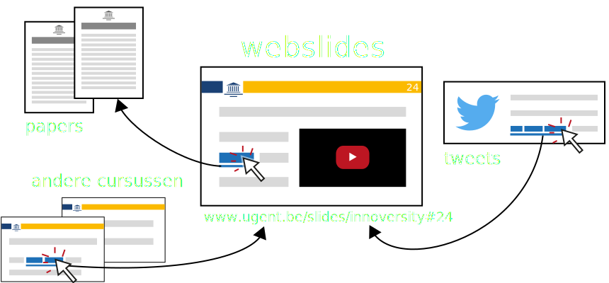
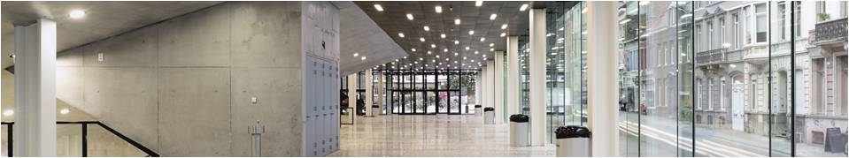
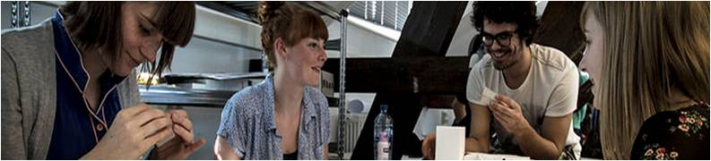
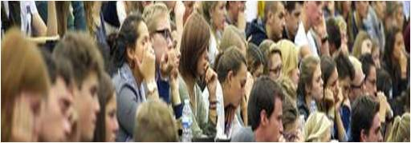

Broodje Martinnovatie
Open Webslides: Preview

1. Wat zijn webslides?
-
Webslides zijn lesslides gemaakt met webtechnologie.
-
Webslides zijn dus websites die eruit zien zoals slides,
met alle mogelijkheden die websites bieden.
- links, filmpjes, animaties, interactie…
Voorbeelden van webslides aan de UGent
2. Waarom webslides? Een kort overzicht
Integratie van multimedia
Webslides gebruiken net dezelfde technologie als websites.
Dit laat de naadloze integratie toe van alle mogelijkheden die het web biedt:
YouTube-filmpjes, tweets van Twitter, interactieve webpagina’s, dynamische grafieken etc…
Webslides werken bovendien op ieder toestel, ook smartphones en tablets, zonder software te installeren.
Interactieve webtools

Interactie tijdens de les vergt een andere aanpak in kleine en grote groepen.
Gelukkig bieden een toenemend aantal webtools specifieke oplossingen voor elke setting.
Webslides laten toe deze webtools rechtstreeks te embedden.
Daardoor kan de interactie ook verdergaan na de les, bv. interessant in een flipped classroom context.
Open education

Docenten die graag hun lesmateriaal delen met collega's of andere geïnteresseerden,
kunnen hun webslides gemakkelijk online delen.
Maar ook docenten die liever hun webslides achter de UGent CAS log-in houden, zitten veilig.
Vanuit Statistiek 3 kunnen doorlinken naar een specifieke slide uit Statistiek 1 is op zich al bijzonder handig.
Co-creatie met collega's

Een cursus samenstellen met collega's en assistenten vergt heel wat coördinatie.
Een versiecontrolesysteem als git helpt om overzichtelijk te kunnen samenwerken en vereenvoudigt cursusmanagement.
Webslides zijn van nature geschikt om op deze manier beheerd te worden via een (open-source) platform naar keuze.
Co-creatie met studenten

Naast de input van medelesgevers kunnen ook studenten een waardevolle bijdrage leveren aan de cursus.
Via GitHub laten we nu al studenten webslides aanvullen en verbeteringen suggereren.
Populaire aanpassingen vinden snel hun weg naar de docent die deze in één klik al dan niet kan accepteren – en de integratie gebeurt automatisch.
3. Hoe webslides maken? Twee demo's
Docenten die een basiskennis hebben van de opmaaktalen HTML of Markdown kunnen meteen hun eerste webslides maken via bv. dit GitHub-sjabloon.
Om het gemakkelijker te maken hebben we er ook een demo bij voorzien.
Voor wie geen HTML of Markdown adept is, zijn er verschillende online editors die toelaten webslides te maken in een grafische interface.
In deze demo geven we een voorbeeld van hoe je webslides kan maken via Slides.com (gratis versie).
We wisselen graag van gedachten rond het UGent Open Webslides project!
Alvast tot donderdag,
Ruben & Esther